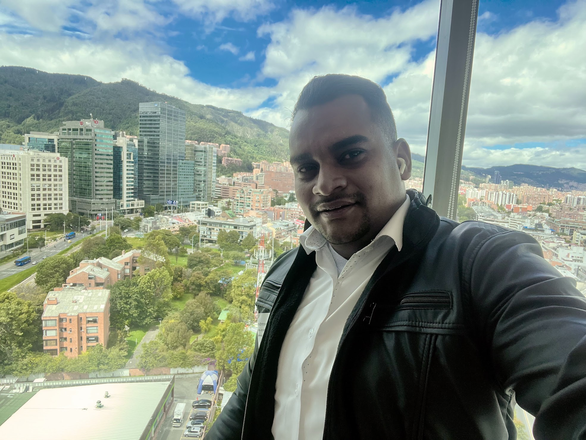

Cloud Architecture Manager · Principal DevSecOps Engineer
Multi-Cloud Strategist · Platform Engineering Leader

Ingeniero de Sistemas con más de 10 años de experiencia liderando arquitecturas cloud empresariales en entornos multi-país y multi-nube — AWS, Google Cloud y Azure.
Especialista en diseño de Landing Zones, gobierno cloud, DevSecOps, automatización avanzada e implementación de modelos de Platform Engineering para los sectores financiero y asegurador en LATAM.
He liderado equipos de hasta 22 arquitectos y gestionado la migración de decenas de aplicaciones críticas, incluyendo la transición completa de Liberty Seguros a HDI Seguros.
Diseño de estructuras multi-account en AWS, arquitecturas serverless, contenerizadas y multi-región con alta disponibilidad.
Seguridad integrada en pipelines, WAF, GuardDuty, Security Hub, IAM con mínimo privilegio e ISO 27001.
Pipelines en Jenkins, GitHub Actions y Azure DevOps. Infrastructure as Code con Terraform y CloudFormation.
Optimización de costos cloud enterprise, métricas DORA, observabilidad con Dynatrace, Datadog y OpenTelemetry.
Dominio multi-nube con enfoque en seguridad, escalabilidad y gobierno enterprise
10+ años construyendo infraestructuras cloud críticas en LATAM y el mundo
Administración integral del proceso DevOps para aplicaciones críticas del negocio en entornos multi-nube (AWS y GCP), combinando optimización de pipelines CI/CD, DevSecOps y gestión de infraestructura con enfoque en seguridad y eficiencia operativa.
Liderazgo de estrategia, diseño y gobierno de arquitecturas cloud multi-cuenta y multi-nube para clientes del sector financiero, asegurador y corporativo en LATAM. Gestión de equipo de 22 arquitectos y 4 gerentes de proyectos.
Arquitecto de soluciones cloud especializado en AWS y GCP para el sector bancario. Enfoque en Landing Zone, DevSecOps y FinOps en entornos altamente regulados para banca, cajas de compensación y seguros en LATAM.
Principal DevSecOps para mercados de Asia, Europa y Latinoamérica. Arquitecto líder del portal de agentes y software de inspecciones digitales. Líder de la migración de ~68 aplicaciones empresariales en la transición Liberty → HDI Seguros garantizando continuidad operativa.
Senior Full Stack y DevOps para Liberty Mutual Insurance. Desarrollo del portal de agentes multi-mercado en AWS y Acquia Cloud, con implementación de pipelines CI/CD y prácticas DevOps.
Roles de liderazgo técnico y desarrollo full stack con enfoque en arquitecturas cloud (AWS/GCP), microservicios, DevOps y modernización de aplicaciones. Gestión de equipos de desarrollo, CI/CD y despliegues en nube.
Desarrollo de aplicaciones web y móviles, sistemas contables en AWS, plataformas blockchain con contratos inteligentes EVM, apps iOS publicadas en App Store e integración con GCP. Base full stack sólida que fundamentó la evolución hacia cloud.
Formación integral en sistemas e infraestructura con especialización posterior en cloud computing, arquitecturas distribuidas y DevSecOps.
Mejor bachiller 2010. Mejor promedio ponderado ICFES sector oficial. Reconocimiento Alcaldía de Ciénaga · Student Night Talent.
Certificaciones & Capacitaciones
Respaldo de líderes y colegas con quienes he trabajado a lo largo de mi carrera.
"Es un placer para mí recomendar a Andrés Fornaris, con quien tuve el privilegio de trabajar durante más de 2 años. Andrés demostró ser un líder excepcional con una habilidad sobresaliente para combinar un profundo conocimiento técnico con habilidades interpersonales que fortalecen cualquier equipo de trabajo. Su capacidad para abordar problemas complejos y encontrar soluciones técnicas efectivas es impresionante."
"Es un verdadero placer recomendar a Andrés Fornaris, un profesional excepcional con quien tuve el honor de trabajar. Andrés destaca por su sólida experiencia en DevOps, infraestructura cloud (AWS, Azure y Google Cloud) y DevSecOps. Más allá de su conocimiento técnico, sobresale por su liderazgo, empatía y capacidad para colaborar eficazmente en equipo. Estoy convencido de que Andrés sería un gran aporte para cualquier organización."
"Me complace recomendar a Andrés Fornaris, con quien trabajé de cerca durante su cargo como Cloud Architecture Manager en Itera Process. Andrés lideró una organización multidisciplinaria de más de 20 arquitectos, impulsando el diseño e implementación de plataformas cloud modernas para múltiples clientes en LATAM. Su capacidad para combinar pensamiento arquitectónico estratégico con experiencia técnica hands-on le permitió acelerar la adopción cloud manteniendo sólidas prácticas de gobernanza y seguridad."
"Tuve el privilegio de trabajar con Andrés y puedo afirmar que es un líder excepcional, con una sólida visión estratégica y una destacada capacidad técnica que impacta directamente en los resultados del negocio."
"Andrés es un líder excepcional con una gran habilidad técnica y estratégica. Destaco especialmente sus habilidades interpersonales y su capacidad para fomentar un ambiente armonioso y colaborativo, siempre dispuesto a escuchar y brindar apoyo."
"Destaco a Andres Fornaris por su sólida capacidad técnica y su visión estratégica para alinear la arquitectura en la nube con los objetivos del negocio. Como líder, se caracteriza por su comunicación asertiva, cercanía y calidad humana."
"Un gran profesional, gran ser humano que destacó como líder, con gran acompañamiento y escucha a las necesidades del día a día. Se destaca en el amplio conocimiento de las diferentes nubes y apoyo cuando se requiere."
"Andres is a uniquely talented professional — he can do complex technical engineering work and at the same time manage and lead that work. His contribution in Andes Markets going live in AWS Cloud is extraordinary."
"Me complace recomendar a Andrés como un destacado profesional en DevOps. Destaco sus habilidades en CI/CD, infraestructura AWS, automatización con Python, y su excelente comunicación y colaboración en equipo."
"Arquitecto DevOps altamente competente y con talento. Su experiencia como desarrollador le da una perspectiva única para la automatización de infraestructuras, combinando habilidades técnicas y estratégicas para optimizar procesos."
"Puedo afirmar que es un experto en servicios de AWS. Su profundo conocimiento en la nube lo convierte en un recurso invaluable, siempre buscando agregar valor y entregar resultados de alta calidad."
"Lo considero un gran profesional, con un seniority alto, muy integral, con grandes skills tanto duros como blandos. Resalto su capacidad de análisis, planeación y ejecución. Además lo valoro como una gran persona."
"Andrés es un tremendo profesional, con alto conocimiento como DevOps, proactivo, muy colaborador. No pasa desapercibido en los equipos, su forma de ser es muy participativa y profesional."
"Es una persona que destaca por su liderazgo y su capacidad de resolución, además de su calidad como ser humano en brindar ayuda y ser colaborativo con todo el equipo que lo rodea."
"Ha demostrado ser un ingeniero DevOps excepcional en HDI Seguros Colombia. Su pasión por el desarrollo, la seguridad y la innovación es evidente en cada proyecto, integrando soluciones en AWS de manera eficiente y segura."
"Excelente profesional y persona, se caracteriza por tener una amplia experiencia y conocimiento, muy comprometido en su trabajo y enfocado a los resultados. ¡Muy buen compañero!"
Disponible para roles de arquitectura cloud, consultoría DevSecOps y liderazgo técnico en proyectos enterprise en LATAM y el mundo.